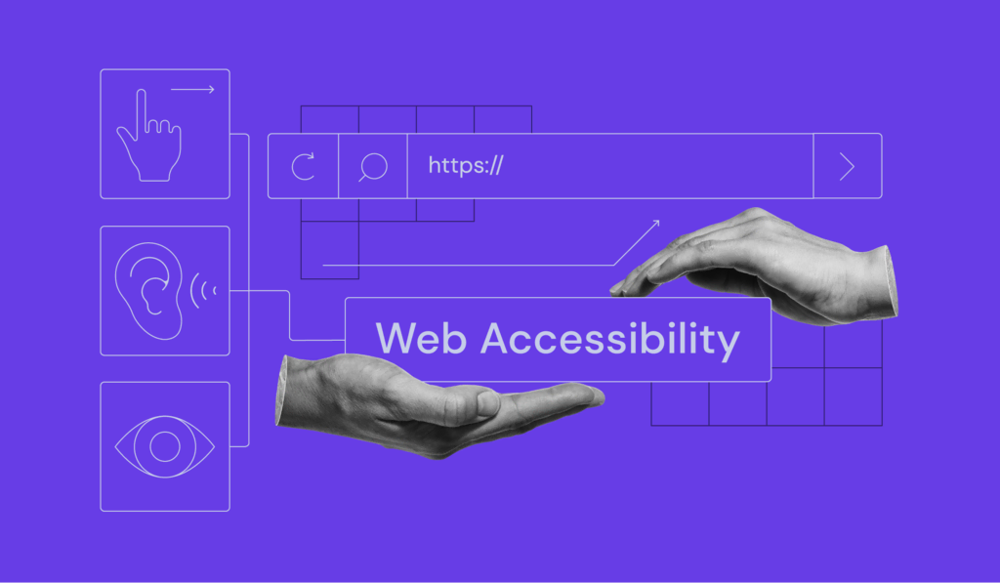

An interactive approach to understanding digital accessibility.
START THE EXPERIENCEWebsites are often designed with an “assumed user” in mind — someone who can see clearly, use a mouse easily, and process information quickly.
But not everyone uses the web in the same way.

This experience invites you to:
Step into someone else’s shoes
Explore how small design decisions can create barriers for real users
Instead of reading rules or guidelines, you’ll learn by interacting with the interface itself.